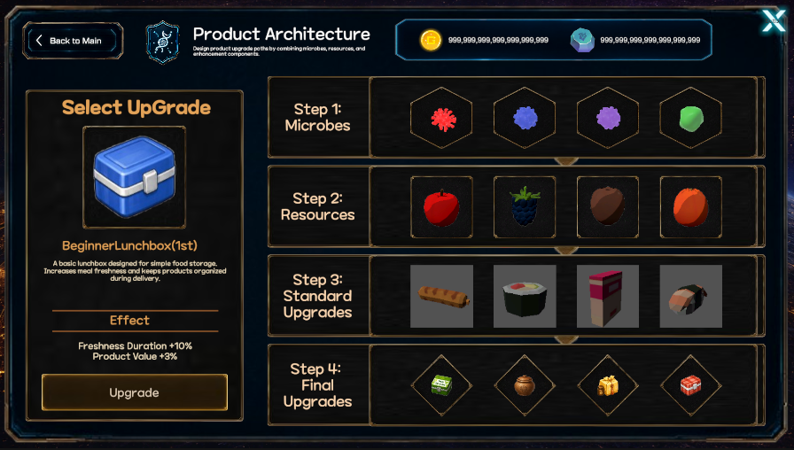

Core System
제품 아키텍쳐
진입 경로

홈
→ 코어 시스템
→ 제품 아키텍처제품 아키텍처에서는 미생물, 자원, 일반 업그레이드, 최종 업그레이드를 순서대로 해금하고 제품의 성능을 강화한다.
기본 구조
제품 아키텍처는 4단계로 구성된다.
1단계: 미생물
→ 2단계: 자원
→ 3단계: 일반 업그레이드
→ 4단계: 최종 업그레이드이전 단계를 먼저 해금해야 다음 단계로 진행할 수 있다.
화면 구성
왼쪽: 선택한 업그레이드
현재 선택한 제품과 업그레이드 정보를 표시한다.
표시 정보
- 제품 아이콘
- 제품 이름
- 제품 설명
- 적용 효과
- 업그레이드 버튼
예시:
BeginnerLunchbox(1st)
Freshness Duration +10%
Product Value +3%오른쪽: 업그레이드 단계
제품에 적용할 업그레이드 재료와 해금 상태를 표시한다.
Step 1: Microbes
Step 2: Resources
Step 3: Standard Upgrades
Step 4: Final Upgrades잠긴 단계에는 먼저 해금해야 하는 이전 단계가 표시된다.
Unlock Step 1 first.
Unlock Step 2 first.
Unlock Step 3 first.1단계: 미생물
제품에 적용된 미생물의 형태를 변경한다.
처음에는 기존 미생물 형태 하나만 적용되어 있으며, 업그레이드를 통해 다른 형태를 추가할 수 있다.
예시
기존 형태: 불
→ 물 형태 추가
→ 전기 형태 추가
→ 불 + 물 + 전기1단계 미생물 형태를 확정해야 2단계 자원 업그레이드가 열린다.
2단계: 자원
제품에 자원 업그레이드를 적용한다.
선택한 자원에 따라 다음 능력치 중 하나 이상을 증가시킨다.
2단계 자원 업그레이드를 적용해야 3단계 일반 업그레이드가 열린다.
3단계: 일반 업그레이드
제품의 가격, 우선도, 가치, 효율을 추가로 강화한다.
선택한 업그레이드에 따라 증가하는 능력치와 증가량이 달라진다.
강화 대상
3단계 일반 업그레이드를 적용해야 4단계 최종 업그레이드가 열린다.
4단계: 최종 업그레이드
제품의 가격, 우선도, 가치, 효율 중 선택한 방향을 최종적으로 강화한다.
최종 업그레이드는 이전 단계보다 증가량이 크며, 제품의 최종 성능 방향을 결정한다.
강화 대상
제품 평가 항목
각 단계에서 추가된 재료와 업그레이드는 다음 네 가지 항목으로 평가된다.
가격
상품의 실제 판매 가격에 영향을 준다.
최종 판매 가격
= 구성품 가격 합계 × 가격 평가 보정치
최대 판매 가격
= 기본 가격 × 2우선도
상점에서 어떤 상품이 먼저 판매되는지를 결정한다.
가치
상품이 박물관, 전시, 경매처럼 희소성과 평가액이 중요한 장소에서 받는 가격 배율에 영향을 준다.
가치 증가
→ 박물관 평가액 증가
→ 경매 낙찰가 배율 증가효율
상품의 생산 효율에 영향을 준다.
효율 증가
→ 생산시간 감소
→ 시간당 생산량 증가단계별 레시피 등록
제품 아키텍처의 1단계부터 4단계까지는 각각 독립된 레시피로 등록된다.
1단계 상품
→ 1단계 레시피 등록
2단계 상품
→ 2단계 레시피 등록
3단계 상품
→ 3단계 레시피 등록
4단계 상품
→ 4단계 레시피 등록상위 단계 상품은 이전 단계 상품과 새로 추가된 업그레이드 재료를 조합해 제작한다.
가격 계산
각 단계 상품의 가격은 해당 상품을 구성하는 모든 재료와 이전 단계 상품 가격의 합으로 계산한다.
현재 단계 상품 가격
= 이전 단계 상품 가격
+ 현재 단계에 추가된 재료 가격예시:
1단계 가격
= 기본 상품 가격 + 미생물 가격
2단계 가격
= 1단계 상품 가격 + 자원 가격
3단계 가격
= 2단계 상품 가격 + 일반 업그레이드 가격
4단계 가격
= 3단계 상품 가격 + 최종 업그레이드 가격따라서 최종 4단계 상품 가격은 1단계부터 4단계까지 사용된 모든 구성품 가격의 합이 된다.
업그레이드 적용 흐름
제품 선택
→ 1단계 미생물 선택
→ 업그레이드 적용
→ 2단계 자원 해금
→ 3단계 일반 업그레이드 해금
→ 4단계 최종 업그레이드 해금
→ 제품 강화 완료제품 선택
업그레이드할 제품을 먼저 선택한다.
제품마다 적용 가능한 미생물, 자원, 일반 업그레이드, 최종 업그레이드가 다를 수 있다.
제품의 1~7단계 생산체인과 제품 아키텍처의 4단계 업그레이드는 서로 다른 시스템이다.
1~7단계 생산체인
= 세트 상품의 제작 및 연속 판매 구조
4단계 제품 아키텍처
= 개별 제품의 성능 강화 구조메뉴 설명
제품 아키텍처
제품에 미생물, 자원, 일반 업그레이드, 최종 업그레이드를 순서대로 적용합니다. 각 단계를 해금해 제품의 성능과 고유 효과를 강화할 수 있습니다.